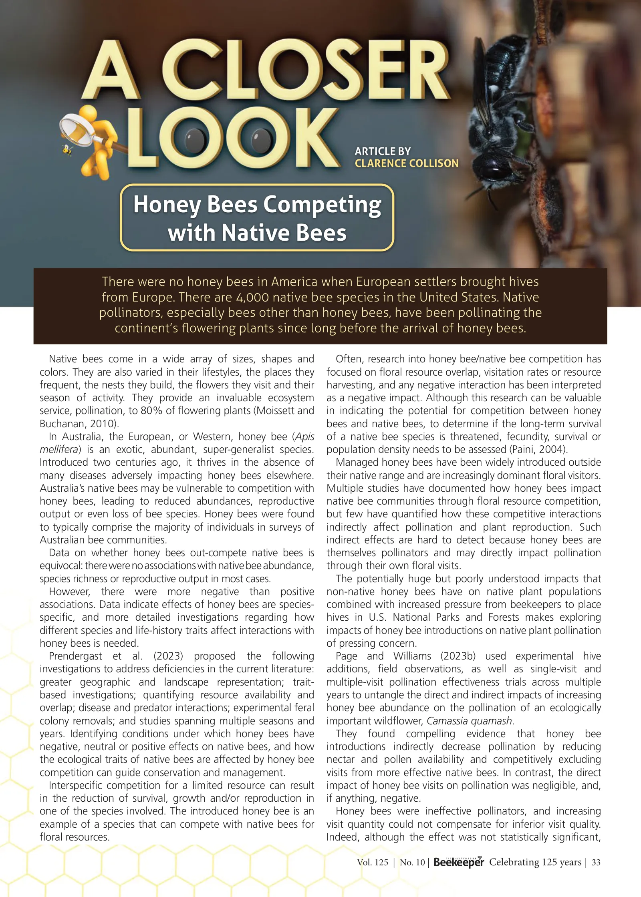

ARTICLE BY
CLARENCE COLLISON
Honey Bees Competing
with Native Bees
Mike Perry
Native bees come in a wide array of sizes, shapes and
colors. They are also varied in their lifestyles, the places they
frequent, the nests they build, the flowers they visit and their
season of activity. They provide an invaluable ecosystem
service, pollination, to 80% of flowering plants (Moissett and
Buchanan, 2010).
In Australia, the European, or Western, honey bee (Apis
mellifera) is an exotic, abundant, super-generalist species.
Introduced two centuries ago, it thrives in the absence of
many diseases adversely impacting honey bees elsewhere.
Australia’s native bees may be vulnerable to competition with
honey bees, leading to reduced abundances, reproductive
output or even loss of bee species. Honey bees were found
to typically comprise the majority of individuals in surveys of
Australian bee communities.
Data on whether honey bees out-compete native bees is
equivocal: there were no associations with native bee abundance,
species richness or reproductive output in most cases.
However, there were more negative than positive
associations. Data indicate effects of honey bees are species-
specific, and more detailed investigations regarding how
different species and life-history traits affect interactions with
honey bees is needed.
Prendergast et al. (2023) proposed the following
investigations to address deficiencies in the current literature:
greater geographic and landscape representation; trait-
based investigations; quantifying resource availability and
overlap; disease and predator interactions; experimental feral
colony removals; and studies spanning multiple seasons and
years. Identifying conditions under which honey bees have
negative, neutral or positive effects on native bees, and how
the ecological traits of native bees are affected by honey bee
competition can guide conservation and management.
Interspecific competition for a limited resource can result
in the reduction of survival, growth and/or reproduction in
one of the species involved. The introduced honey bee is an
example of a species that can compete with native bees for
floral resources.
Often, research into honey bee/native bee competition has
focused on floral resource overlap, visitation rates or resource
harvesting, and any negative interaction has been interpreted
as a negative impact. Although this research can be valuable
in indicating the potential for competition between honey
bees and native bees, to determine if the long-term survival
of a native bee species is threatened, fecundity, survival or
population density needs to be assessed (Paini, 2004).
Managed honey bees have been widely introduced outside
their native range and are increasingly dominant floral visitors.
Multiple studies have documented how honey bees impact
native bee communities through floral resource competition,
but few have quantified how these competitive interactions
indirectly affect pollination and plant reproduction. Such
indirect effects are hard to detect because honey bees are
themselves pollinators and may directly impact pollination
through their own floral visits.
The potentially huge but poorly understood impacts that
non-native honey bees have on native plant populations
combined with increased pressure from beekeepers to place
hives in U.S. National Parks and Forests makes exploring
impacts of honey bee introductions on native plant pollination
of pressing concern.
Page and Williams (2023b) used experimental hive
additions, field observations, as well as single-visit and
multiple-visit pollination effectiveness trials across multiple
years to untangle the direct and indirect impacts of increasing
honey bee abundance on the pollination of an ecologically
important wildflower, Camassia quamash.
They found compelling evidence that honey bee
introductions indirectly decrease pollination by reducing
nectar and pollen availability and competitively excluding
visits from more effective native bees. In contrast, the direct
impact of honey bee visits on pollination was negligible, and,
if anything, negative.
Honey bees were ineffective pollinators, and increasing
visit quantity could not compensate for inferior visit quality.
Indeed, although the effect was not statistically significant,
There were no honey bees in America when European settlers brought hives
from Europe. There are 4,000 native bee species in the United States. Native
pollinators, especially bees other than honey bees, have been pollinating the
continent’s flowering plants since long before the arrival of honey bees.
Vol. 125 | No. 10 |
Celebrating 125 years | 33